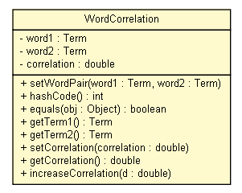

tud.iir.classification
Class WordCorrelation

java.lang.Object
 tud.iir.classification.WordCorrelation
tud.iir.classification.WordCorrelation
public class WordCorrelation
- extends java.lang.Object
| Methods inherited from class java.lang.Object |
clone, finalize, getClass, notify, notifyAll, toString, wait, wait, wait |
word1
private Term word1
word2
private Term word2
correlation
private double correlation
WordCorrelation
public WordCorrelation(Term word1,
Term word2)
setWordPair
public void setWordPair(Term word1,
Term word2)
hashCode
public int hashCode()
- Overrides:
hashCode in class java.lang.Object
equals
public boolean equals(java.lang.Object obj)
- Overrides:
equals in class java.lang.Object
getTerm1
public Term getTerm1()
getTerm2
public Term getTerm2()
setCorrelation
public void setCorrelation(double correlation)
getCorrelation
public double getCorrelation()
increaseCorrelation
public void increaseCorrelation(double d)